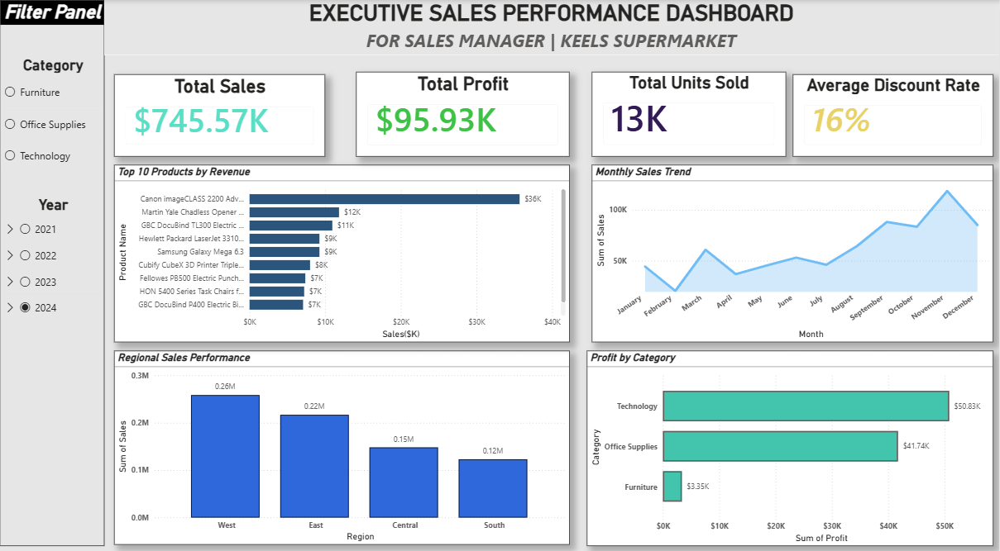

Executive KPIs
Sales revenue, total profit, units sold and average discount rate.
PROJECT 01 / BUSINESS INTELLIGENCE
An interactive business intelligence dashboard developed using Microsoft Power BI to analyse sales performance, profitability and product trends for Keels Supermarket.
01 / PROJECT OVERVIEW
This project involved developing an executive sales dashboard to provide a consolidated view of supermarket performance. The dashboard brings together key business metrics and visualisations to help stakeholders explore sales, profitability and product performance.
02 / DASHBOARD
The dashboard presents sales performance through interactive visualisations and category and year filters.

03 / KEY FEATURES
Sales revenue, total profit, units sold and average discount rate.
Identification and comparison of the top ten products by revenue.
Monthly sales trend analysis to understand changes in business performance.
Comparison of sales across West, East, Central and South regions.
Profit comparison across Furniture, Office Supplies and Technology.
Year and product category slicers for exploring different segments.
04 / SKILLS DEMONSTRATED
05 / TAKEAWAY
This project strengthened my ability to communicate business performance through visual analytics, organise information into meaningful KPIs and present data in an accessible interactive format.
It also provided practical experience in designing dashboards around business reporting requirements.